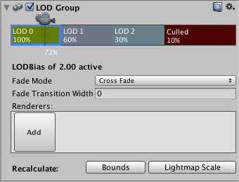

LOD Group
As your scenes get larger, performance becomes a bigger consideration. One of the ways to manage this is to have meshes with different levels of detail depending on how far the camera is from the object. This is called Level of Detail (abbreviated as LOD).
LOD Groups are used to manage level of detail (LOD) for GameObjects. Level of Detail is an optimisation technique that uses several meshes for an object; the meshes represent the same object with decreasing detail in the geometry. The idea is that the low-detail meshes are shown when the object is far from the camera and the difference will not be noticed. Since meshes with simpler geometry are less demanding on the hardware, performance can be improved by using LOD judiciously.

Properties
The different LOD levels are visible in the horizontal bar with the camera icon just above it (LOD: 0, LOD: 1, LOD: 2, etc). The percentages in the LOD bars represent the fraction of the bounding box height relative to screen height where that LOD level becomes active. You can change the percentage values by dragging the vertical lines that separate the bars. You can also add and remove LOD levels from the bar by right-clicking it and selecting Insert Before or Delete from the contextual menu. The position of the camera icon along the bar shows the current percentage. The percentages in the LOD bars represent the thresholds at which the corresponding LOD level becomes active, measured by the ratio of the object's screen space height to screen height. Note that if the LOD Bias is not 1 the camera position is not necessarily the actual position where LOD transits from one to another.
When you click on one of the LOD bars to select it, a Renderers panel will be shown beneath. The "renderers" are actually GameObjects that hold the mesh to represent the LOD level; typically, this will be a child of the object that has the LODGroup component. If you click on an empty box (with the word "Add") in the Renderers panel, an object browser will appear to let you choose the object for that LOD level. Although you can choose any object for the renderer, you will be asked if you want to parent it to the LODGroup GameObject if it isn't already a child.
From Unity 5, you can choose Fade Mode for each LOD level. The fading is used to "blend" two neighboring LODs to achieve a smooth transition effect. However Unity doesn't provide a default built-in technique to blend LOD geometries. You need to implement your own technique according to your game type and asset production pipeline. Unity calculates a "blend factor" from the object's screen size and passes it to your shader.
There are two modes for calculating the blend factor:
| Mode: | Description: |
|---|---|
| Percentage | As the object's screen height goes from the current LOD height percentage to next, the blend factor goes from 1 to 0. Only the meshes of the current LOD will be rendered. |
| Cross-fade | You need to specify a Transition Width value to define a cross-fading zone at the end of the current LOD where it will to transit to the next LOD. In the transition zone, both LOD levels will be rendered. The blend factor goes from 1 to 0 for the current LOD and 0 to 1 for the next LOD. |
The blend factor is accessed as the unity_LODFade.x uniform variable in your shader program. Either keyword LOD_FADE_PERCENTAGE or LOD_FADE_CROSSFADE will be chosen for objects rendered with LOD fading.
For more details on naming conventions see the Level of detail page.
Look at the example of SpeedTree trees to see how LODGroup is configured and how the SpeedTree shader utilizes the unity_LODFade variable.
At the bottom of the inspector are two Recalculate buttons. The Bounds button will recalculate the bounding volume of the object after a new LOD level is added. The Lightmap Scale button updates the Scale in Lightmap property in the lightmaps based on changed LOD level boundaries.